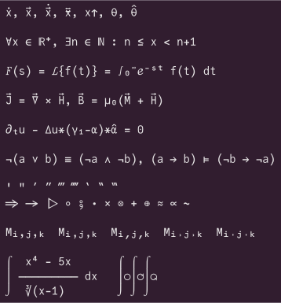
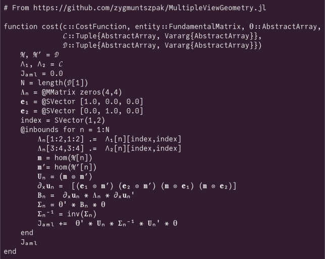
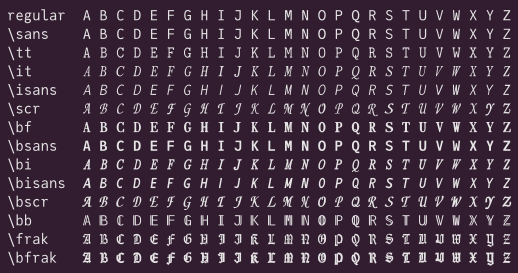
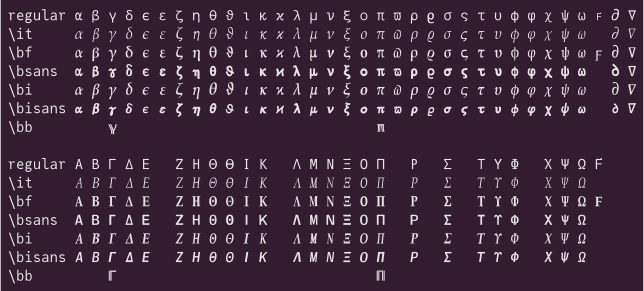
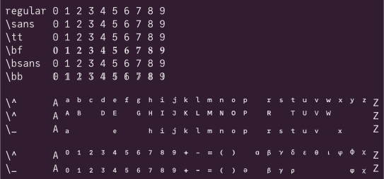
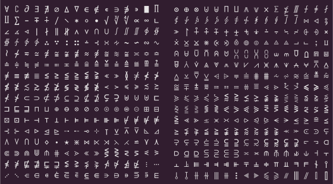
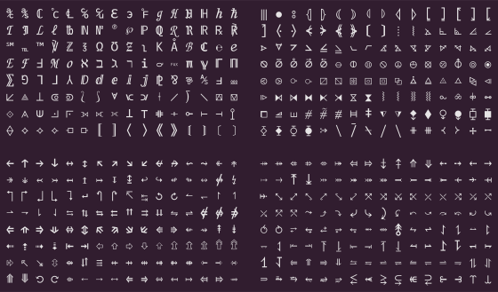
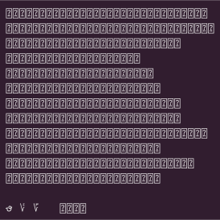

Math symbols in monospace fonts
This page shows how Unicode math symbols are supported by various monospace fonts.
Font comparators often show glyphs as rendered by the browser on the user's platform, using other fonts as fallback for glyphs missing from the selected font. This might well be what you want: text is shown as it would actually look like on your computer (in the browser at least). However the same text might look different on another computer, if different fonts are used as fallback.
In contrast, this page shows samples rendered without fallback to other fonts in cases of missing glyphs. What you see is what's actually supported by each font.
Some other font comparators:
Samples
Renderings were generated on Linux using HarfBuzz
(hb-view) with the ot shaper. Click a sample
to see the plain (UTF-8) text. The symbol lists are derived from Wikipedia.
The \... annotations correspond to Julia completion
prefixes.
Use the left pane to change the font.
Current font: (version ).
       